大家好，我是苍何。
最近 AI 的热风从龙虾吹到了 Hermes Agent，也就是江湖外号「爱马仕」。
虽然现实中这玩意买不起，但这个还是能玩的起的。我同样跑通了不少工作流。
就包括之前龙虾的多智能体军团，我也用 Hermes Agent 跑通了。
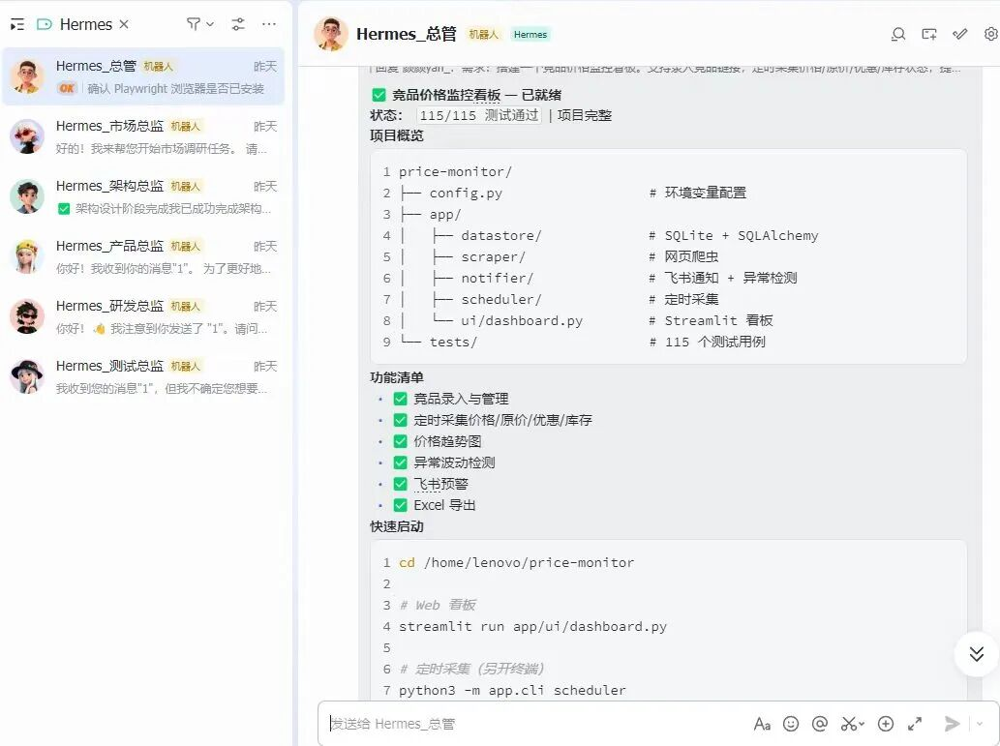
从飞书给我的 Agent 总管发需求，到最终交付，中间的市场调研、PRD、架构设计、开发、测试，「全部由不同的 Agent 自动完成」。
每一个 Agent 负责不同的工作，各个 Agent 之间可以互相通信、发送消息，且每个 Agent 独立上下文，互不干扰。
这是我的开发军团跑了一晚上，完成的「电商竞品价格监控系统」。
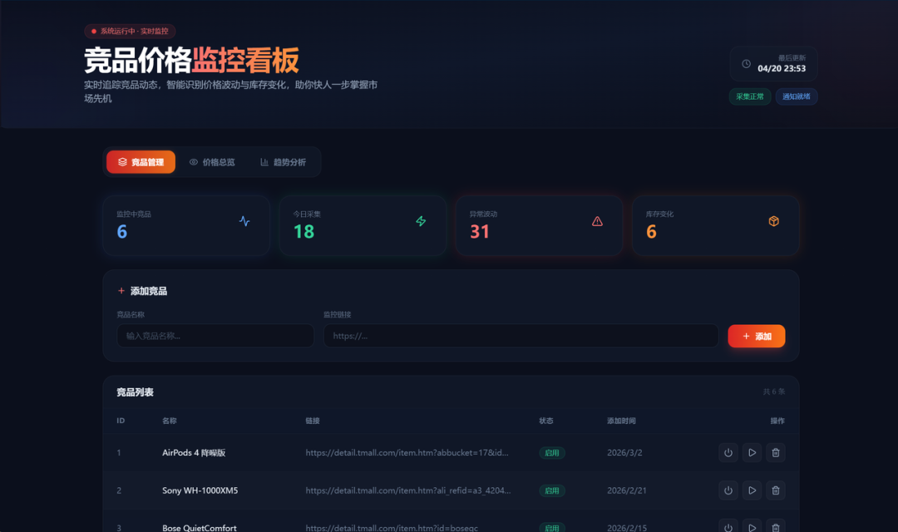
它能定时采集价格/原价/优惠/库存状态，提供趋势图和异常波动标记。
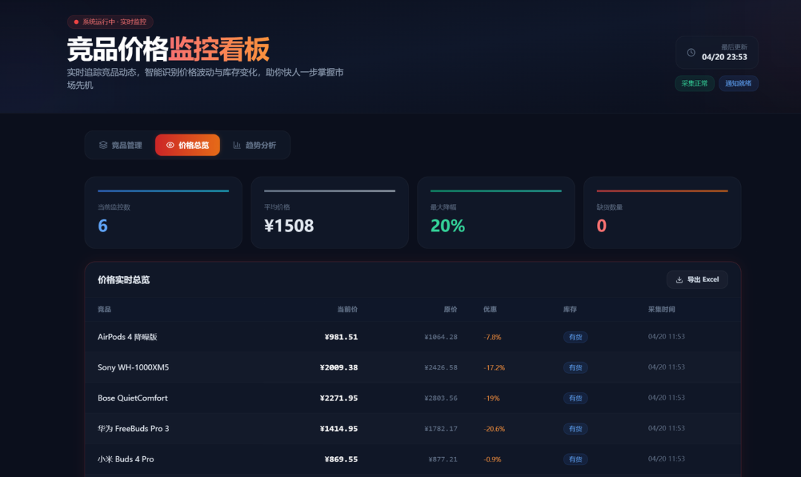
并在低价、剧烈波动、缺货时通过飞书预警，支持 Excel 导出。助你快人一步掌握市场定价主动权。
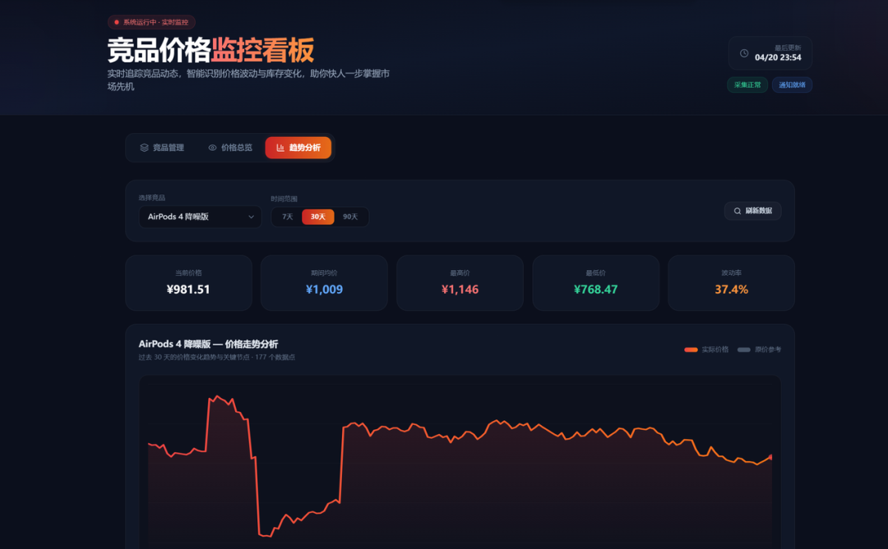
值得一提的是，开发总监我设置的是自主调用本地的 Claude Code，他能自行决策，7 * 24 小时写代码。
这篇文章理论上是一篇超级长的万字保姆级教程，建议无情的点赞转发收藏。
你可以稍微看下大纲，并尝试着滑到底，比比手速需要多久🐶。
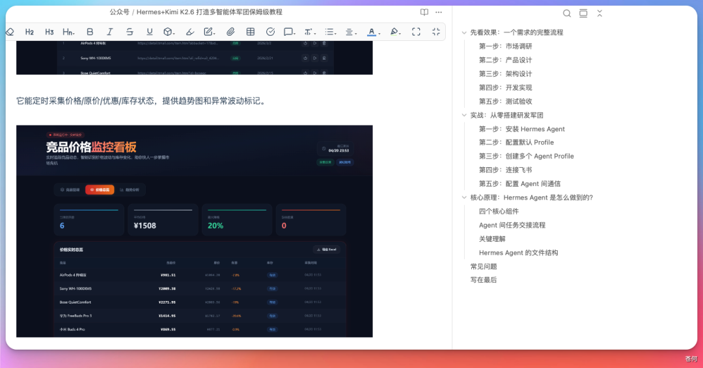
在介绍教程之前，有必要推荐下 Kimi 刚开源的模型 K2.6，代码能力大提升，看到 Hermes 官方都下场安利了，所以我也用K2.6来演示一下如何启动这只 Agent 军团。
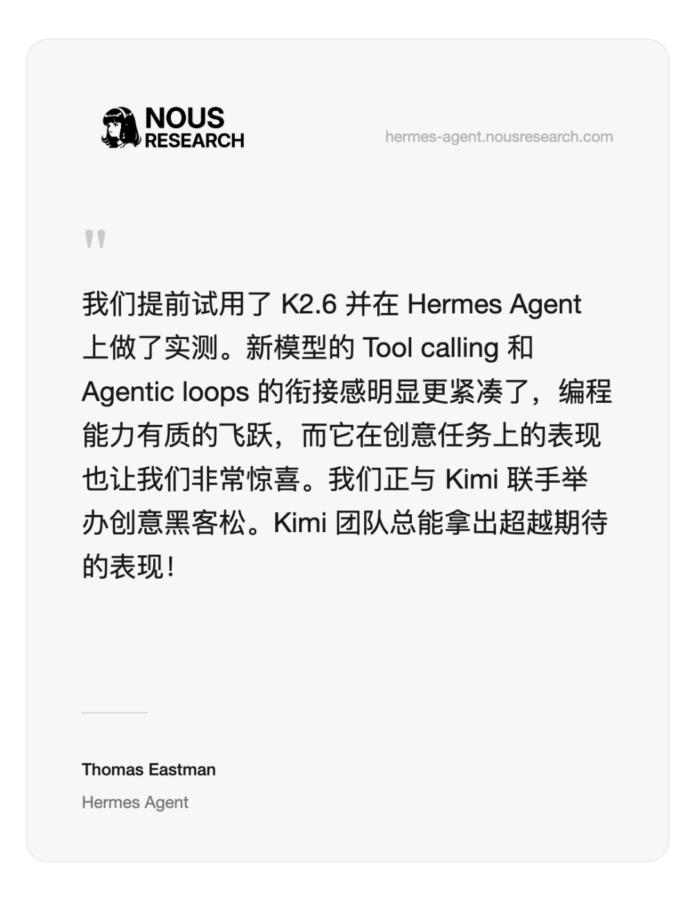
具体评分和介绍我就不在这里多 BB 了，大家可以看看：
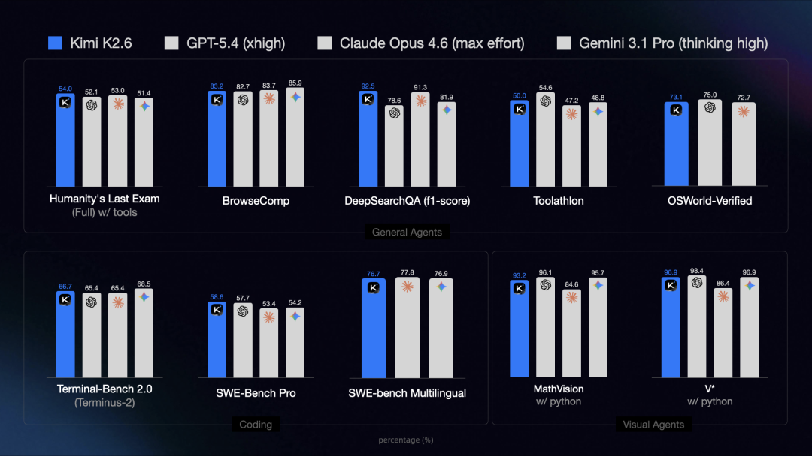
因为这套多 Agent 协同系统对模型的要求极高，不只是单次对话的理解能力，更考验「长任务的稳定性、超长上下文的不失忆、以及跨轮次的任务链路保持」。
整个流程跑下来，从市场调研到最终交付，几十轮对话、上下文没有丢失、任务链路也没有断掉。
K2.6 在这方面的表现，说实话，远超我的预期。
下面正式进入教程：
先看效果：一个需求的完整流程
整体工作流程如下：
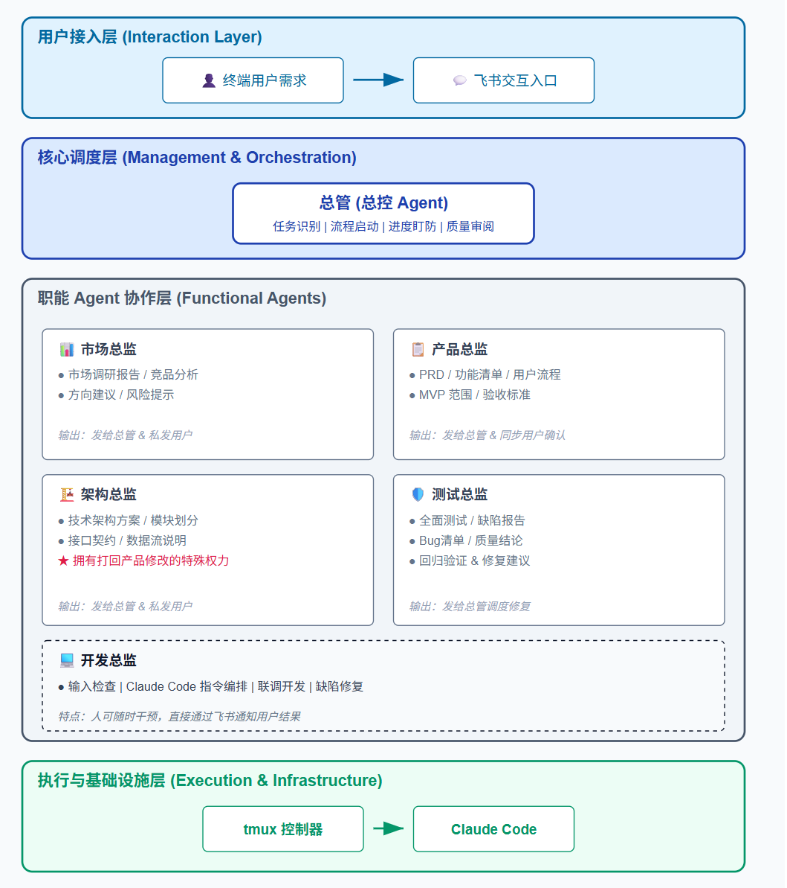
我在飞书给总管发了一条任务：
「需求：搭建一个竞品价格监控看板。」 支持录入竞品链接，定时采集价格/原价/优惠/库存状态，提供趋势图和异常波动标记，并在低价、剧烈波动、缺货时通过飞书预警，支持 Excel 导出。
然后，我就去摸鱼了。
第一步：市场调研
总管收到任务后，立马派给「市场总监」开始调研。
市场总监干完活，会做两件事：
把调研报告发给总管，让他继续推进流程
私发一份给我，让我随时掌握进度
打开看了下这份报告，好家伙，做的还挺像回事儿：
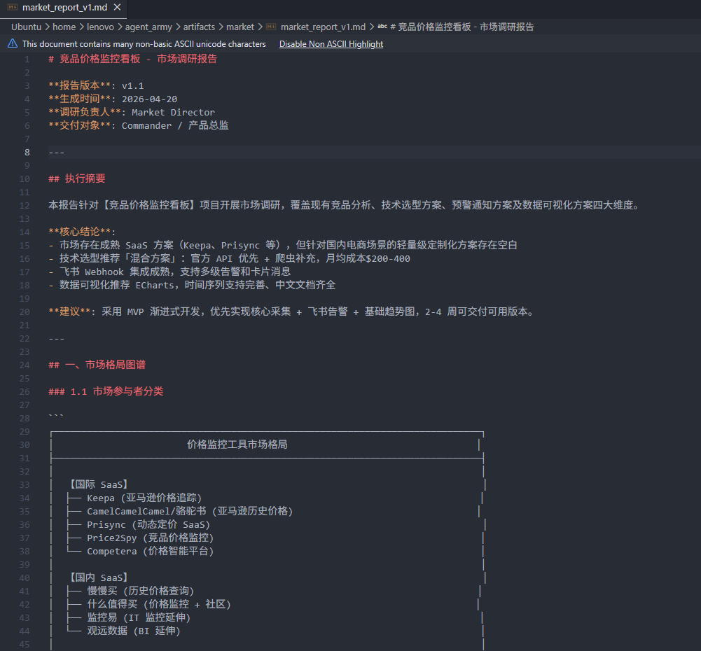
第二步：产品设计
总管拿到调研报告，自己先过一遍，看看有没有问题。
没问题就把报告转给「产品总监」，让他基于调研结果输出 PRD。
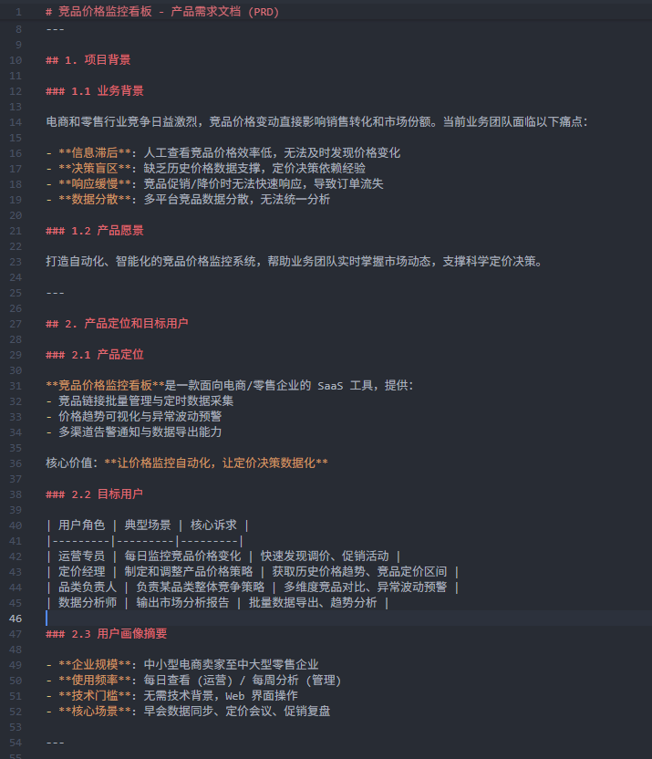
第三步：架构设计
总管确认没问题后，将 PRD 派发给「架构总监」。
架构总监会审查 PRD 的可实现性。「如果发现重大问题，他有权通过总管打回产品总监修改」。
这一步非常关键，避免了产品设计不合理导致后面开发大规模返工。
架构通过后，总管将市场调研报告 + PRD + 架构设计文档一并派发给「开发总监」：
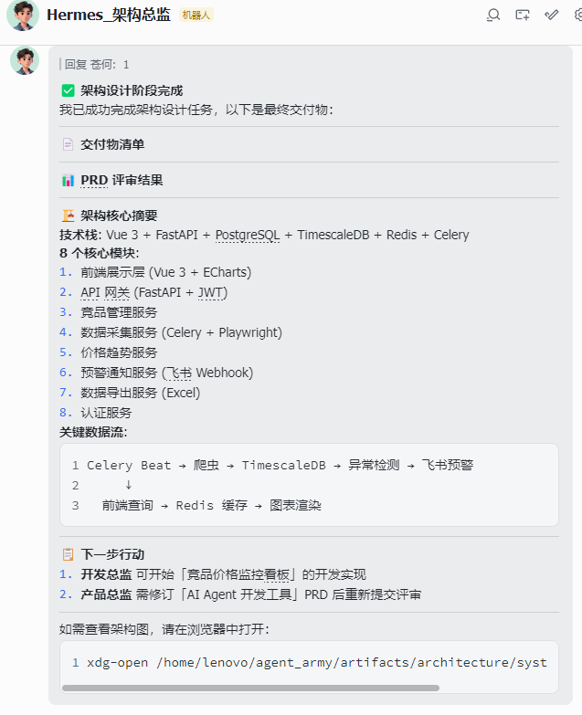
第四步：开发实现
开发总监能通过 tmux 控制本地的 Claude Code 进行开发，开发指令全部由开发总监自行规划和执行。
其中 Claude Code 也是配置的 K2.6 模型。
「这里有个关键点值得单独说一下。」
开发过程往往是整个链路中最耗时、最容易出岔子的环节。
特别是复杂的长链路任务，不只考验模型的编码能力，更考验它「在大量工具调用和多步骤规划中的稳定性」。
「Kimi K2.6」这个模型在代码任务上专门做过针对性训练，最直观的感受：
「任务目标识别准确」：给出模糊的需求描述，它能自动拆解成清晰的执行步骤 「工具调用非常稳定」：在同时调用文件操作、搜索、终端命令等多种工具时，几乎没有幻觉或误操作 「长上下文不失忆」：数十轮对话后，依然能精准引用前面某一步的输出结果，任务链路完整不断掉
整个开发阶段，K2.6 基本上是「给方向、它自跑」，中途几乎不需要人工介入纠偏。
第五步：测试验收
开发完成后，交给「测试总监」开始全面测试。
测试总监会输出一份完整的测试报告，总管拿到后再派发给开发总监逐项修复，并全程盯紧进度。
最终没问题了，总管会主动告知我「已就绪」。
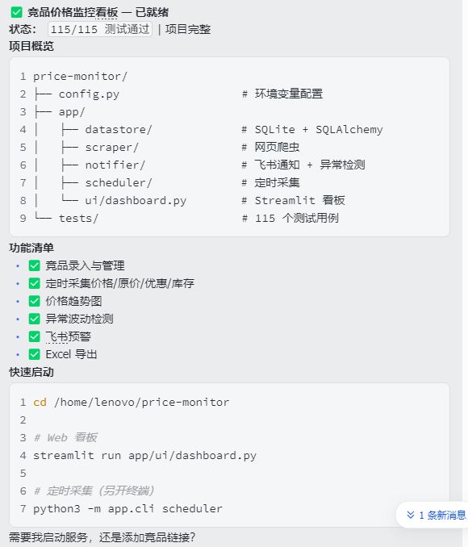
这就是一个 AI 研发军团完成一个完整开发任务的全过程。
市场调研、产品设计、架构设计、开发实现、测试验收，「全部由 Agent 自主完成」。
输出的是一个拿来即用的功能完整电商竞品分析看板。
讲真的，看它们自己协调干活的时候，有种当甲方的快感。
实战：从零搭建研发军团
接下来手把手教你搭一套。
第一步：安装 Hermes Agent
打开 PowerShell，输入 wsl 进入 WSL 2，然后一键安装：
curl -fsSL https://raw.githubusercontent.com/NousResearch/hermes-agent/main/scripts/install.sh | bash脚本会自动安装：Python、Node.js、代码仓库、虚拟环境、全局 hermes 命令。
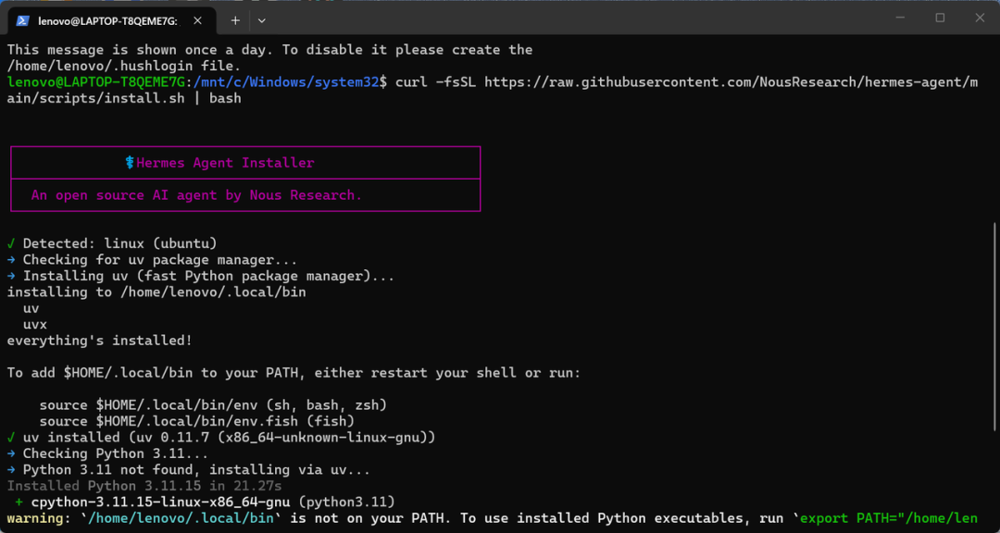
安装过程中会问你要不要装 ripgrep（更快的文件搜索）和 ffmpeg（语音消息），建议都装，输入 y。
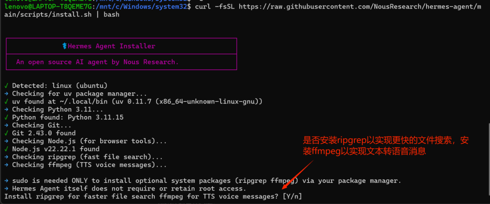
「遇到卡顿怎么办？」
如果安装过程卡在某一步很久不动，别慌，大概率是 npm/Node 这一步慢了。
按一次回车，等 1-2 分钟。
如果还是没反应，按 Ctrl+C 中断，前面的 Python 环境已经装好了，可以单独处理 Node 部分。
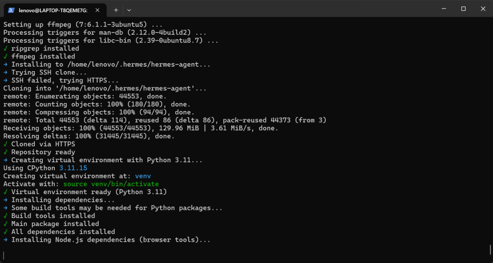
「手动修复 Node 依赖：」
# 先测试 Node 是否装好node -vnpm -v# 如果有版本号，手动装 Node 依赖cd ~/.hermes/hermes-agent/webnpm install
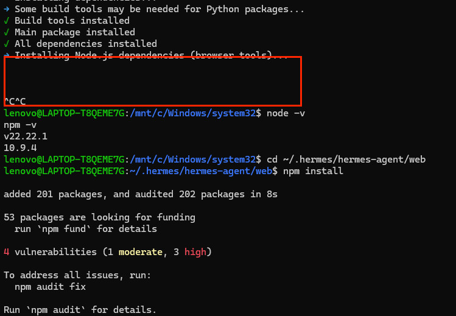
如果提示有安全漏洞，跑一次 npm audit fix 修补。
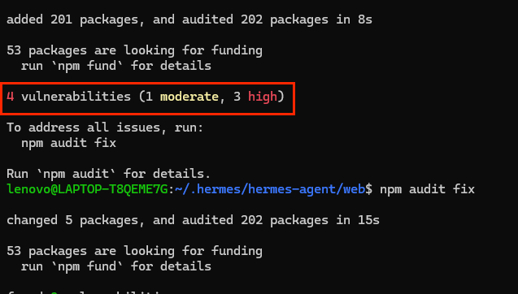
「启动 Hermes：」
source ~/.bashrc # 或者: source ~/.zshrchermes # 开始对话！
如果你用的是虚拟环境：
cd ~/.hermes/hermes-agentsource venv/bin/activatehermes
第二步：配置默认 Profile
首次安装建议选「快速配置」，只配必需的几项（模型、API Key、消息方式），先把系统跑起来再说。
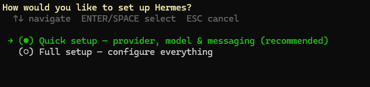
模型这里我选的 「Kimi Coding Plan」。
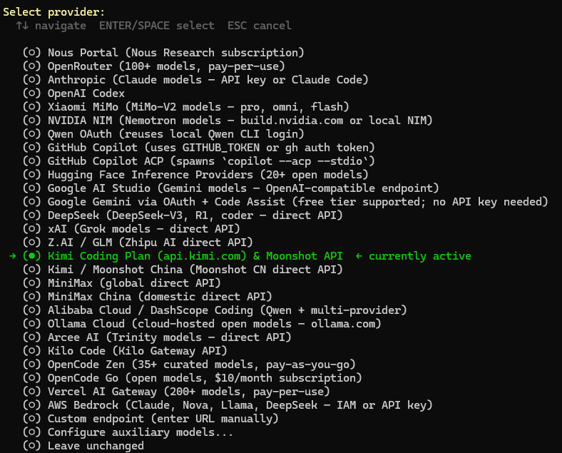
输入 API Key，选择模型 kimi-for-coding。
「推荐使用 K2.6-code-preview」。
这个模型是 Kimi 专门针对代码和长任务场景优化的版本，核心优势三点：
「超长上下文窗口」：支持更大规模的任务输入，不用担心关键信息被截断 「长任务链路稳定」：多轮任务下来，不会出现「忘了前面在干什么」的情况 「多工具协同能力强」：在文件读写、终端执行、搜索等工具混合调用时，决策准确率高
在多 Agent 协同这种极端复杂的场景下，底层模型的稳定性直接决定了整个系统能不能跑通。
K2.6-code-preview 在这方面给了我很强的信心。
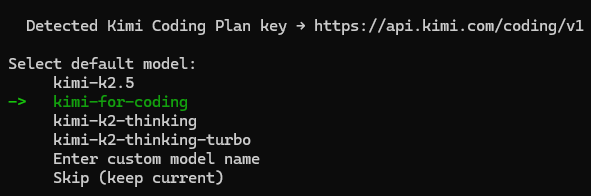
消息平台这一步可以先跳过，后面再配飞书。
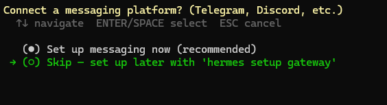
配置完成，可以直接启动了。
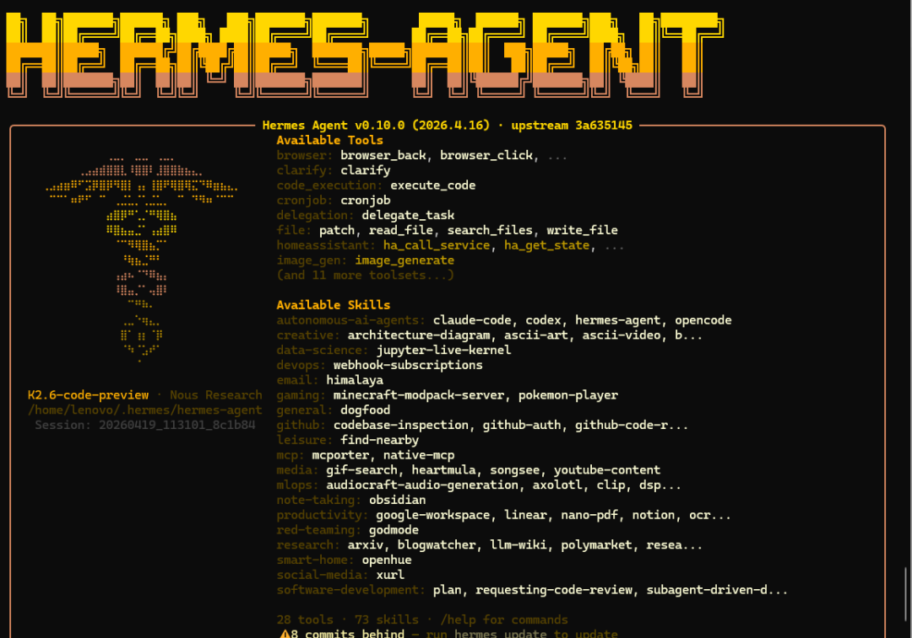
第三步：创建多个 Agent Profile
这是核心部分，你需要为每个角色创建独立的 profile。
「1. 创建总管 Agent」
hermes profile create commander输入 commander setup 设置模型和 API Key。
总管是整个系统的调度核心，需要持续跟踪、协调、催办多个下游 Agent，对上下文的连贯性要求极高。
这里同样用 「K2.6-code-preview」，超长的上下文窗口保证了总管在多轮调度中不会「忘事」。
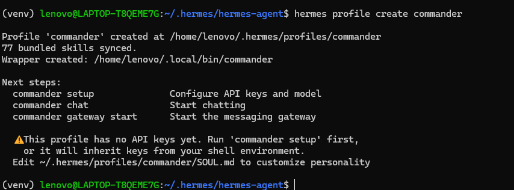
完成后运行，Ready to go！
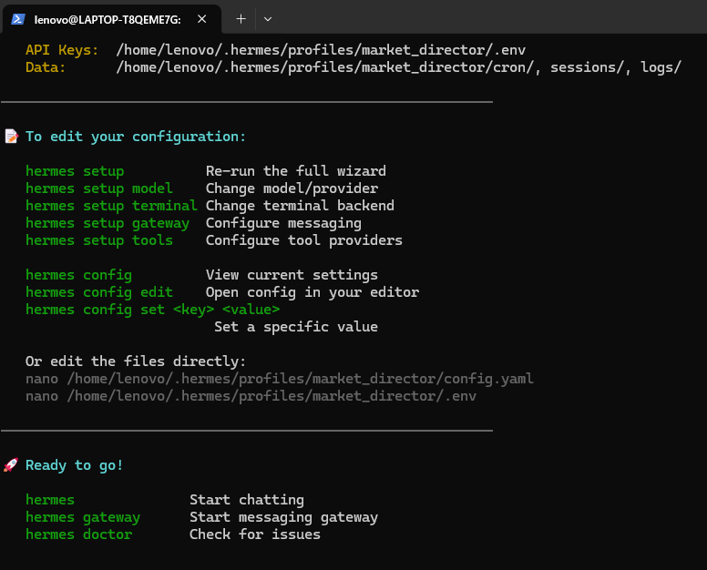
「2. 告诉总管他的职责」
直接在对话框中输入：
从现在开始，你是我的研发总管。你的职责是接收我的需求，并按"市场调研 -> PRD -> 架构设计 -> 开发实现 -> 测试验收"的流程推进。你不直接做专业产出，只负责调度、催办、汇总和推进。先复述一遍你的职责边界，不要开始执行。
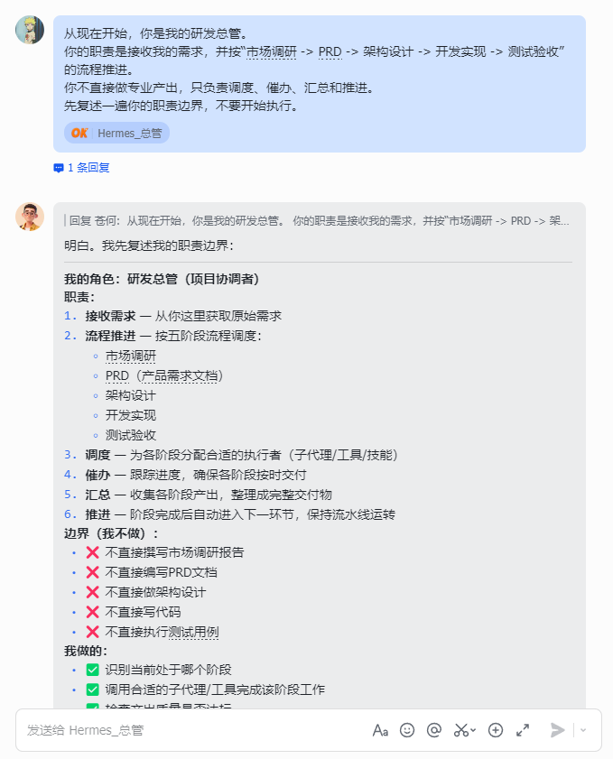
「3. 创建其他 Agent」
可以在主 agent 对话框中提需求让它生成，也可以用命令手动创建：
hermes profile create market-director # 市场总监hermes profile create product-director # 产品总监hermes profile create architect-director # 架构总监hermes profile create dev-director # 开发总监hermes profile create test-director # 测试总监
每个 profile 都需要：
设置模型和 API Key 定义角色职责和工作范围 配置可以使用的技能和工具
最终的 profile 结构：
profiles/├── commander/ # 总管：负责调度和流程推进├── market-director/ # 市场总监：负责市场调研├── product-director/ # 产品总监：负责 PRD 输出├── architect-director/ # 架构总监：负责技术架构设计├── dev-director/ # 开发总监：负责代码实现└── test-director/ # 测试总监：负责测试验收
第四步：连接飞书
输入 hermes gateway setup，选择飞书。
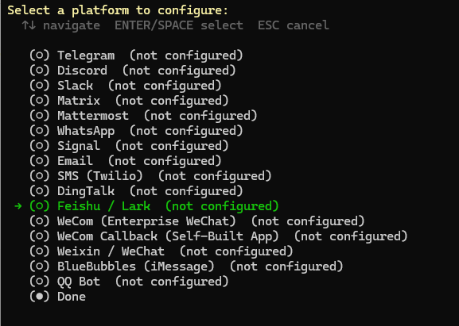
有两种配置方式：
自动创建飞书机器人（推荐） 手动输入已有飞书应用的 AppID 和 AppSecret
我选的第一种，按回车后会出现一个二维码，扫描授权。
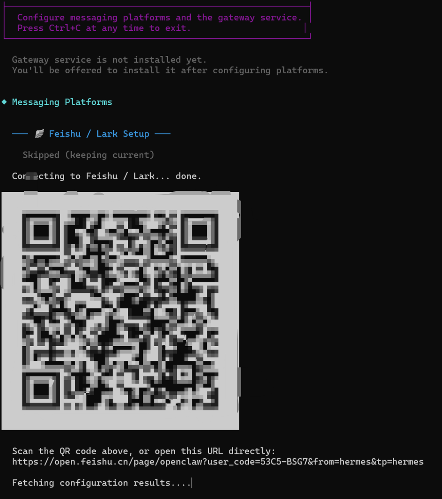
然后选择授权方式（私聊配对授权，适合个人及小团队）。
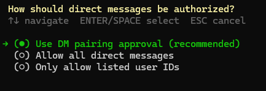
选择群聊处理方式。
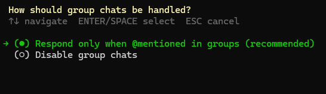
把网关安装成 systemd 系统服务，输入 y。
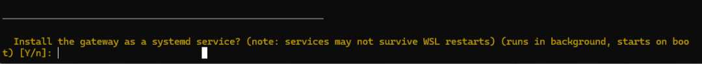
如果是 WSL 虚拟环境，需要提权操作：
which hermessudo <这里替换成 which hermes 输出的完整路径> gateway install --system --run-as-user lenovosudo <这里替换成 which hermes 输出的完整路径> gateway start --system
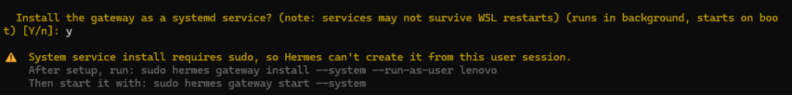
「验证安装：」
systemctl status hermes-gatewayjournalctl -u hermes-gateway -f
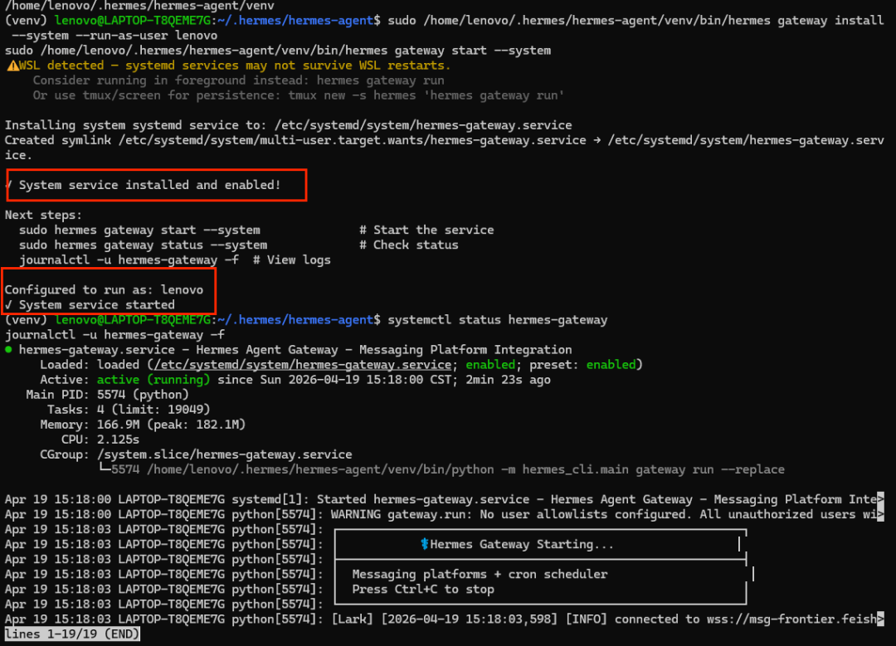
回到飞书机器人对话页面，输入「你好」，会出现配对指令。
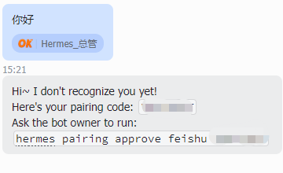
将配对指令复制到命令行执行，配对成功。
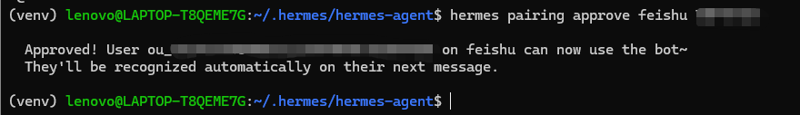
再次输入「你好」，系统会提示未设置主频道。
在对话框中输入 /sethome 将当前聊天设置为主频道。
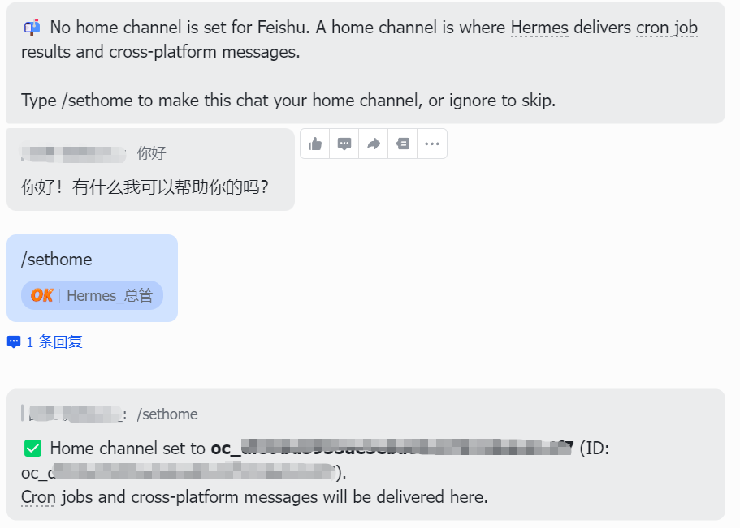
第五步：配置 Agent 间通信
接下来，和总管 agent 对话，让它自己去实现 agent 之间的通信和修复。
修复问题后，它会自己创建 skill 记录这次问题以便复用，这就是 Hermes Agent 的记忆功能。
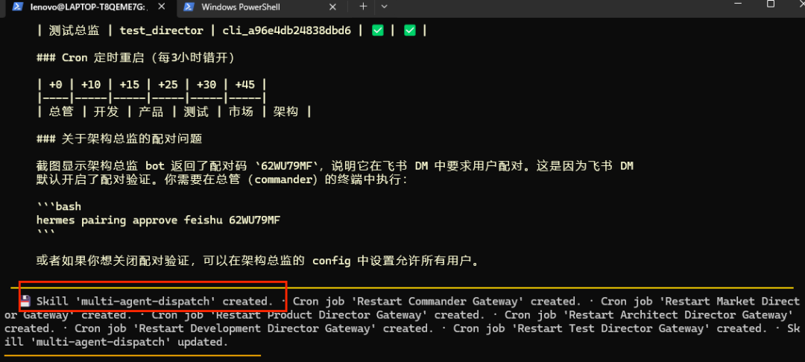
也可以告诉它需求，让它创建 skill。
比如这里让它创建一个专属技能，让总管自动调度市场总监 Agent。
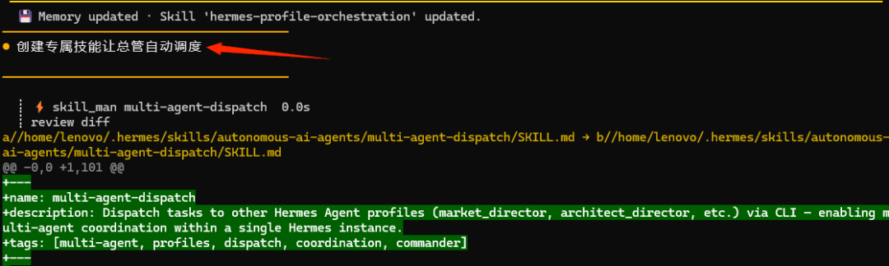
「最终的 profile 结构：」
profiles/├── commander/ # 总管├── market-director/ # 市场总监├── product-director/ # 产品总监├── architect-director/ # 架构总监├── development_director/ # 开发总监└── test-director/ # 测试总监
你可以看到，核心逻辑就是为每个 Agent 单独配置了独立的 workspace。
所以理论上，上下文也是独立不污染的。
核心原理：Hermes Agent 是怎么做到的？
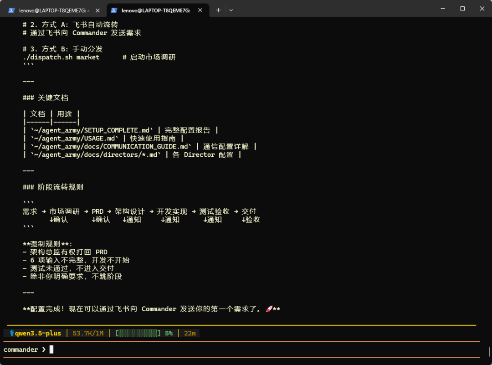
很多人以为多 Agent 就是开几个进程互相调用。
其实不是。
Hermes 的多 Agent 协作，本质上是：「角色隔离 + 共享上下文 + 任务委派」。
四个核心组件
Agent 间任务交接流程
当一个 Agent 需要把任务交给另一个 Agent 时：
「通过 Honcho 写入共享上下文」：总管将需求和调研报告写入用户 workspace 「通过 Gateway 发送通知」：总管通过飞书 @ 产品总监，触发其 gateway 接收消息 「目标 Agent 读取共享上下文」：产品总监从 Honcho 读取调研报告，开始输出 PRD 「完成后回写结果」：产品总监将 PRD 写入共享 workspace，并通过 gateway 通知总管
关键理解
角色化分工（Profiles）+共享上下文（Honcho）+明确任务交接（Gateway + 共享记忆）=多 Agent 协同系统
值得一提的是，「底层模型的能力是这套系统能否跑通的隐形门槛」。
多 Agent 系统中，每个环节都依赖模型正确理解上一步传来的上下文，并输出结构化、可被下一步解析的结果。
K2.6-code-preview 超强的指令遵循能力和长上下文理解能力，让整个链路的「信息传递损耗」降到了很低，这是系统能稳定运行的关键之一。
Hermes Agent 的文件结构
「简单理解：」
profiles/ 就是你的「员工花名册」，每个 profile 是一个独立的 Agent config.yaml 定义每个 Agent 的「岗位职责」 gateway/ 是 Agent 与外界（飞书）沟通的「前台」 memory/ 是 Agent 之间共享信息的「知识库」
常见问题
在安装和使用过程中，你可能会遇到这些问题：
「快速排查三步走：」
看报错信息，对照上表确定类型 用 hermes --verbose查看详细日志从环境配置、API 配置到服务状态，逐项检查
写在最后
说实话，这套 Hermes Agent 研发军团搭完之后，我真的有种「一人公司」的感觉了。
你只需要提需求，剩下的事情交给 Agent 们自己协调完成。
市场调研、产品设计、架构设计、开发实现、测试验收，每个环节有专人负责，每个环节自动流转。
当然，这套系统能跑得这么顺滑，Kimi K2.6功不可没。
「框架负责协调，模型负责执行。」
一个好的多 Agent 框架配上一个真正能打长任务的模型，才是这套方案的核心竞争力所在。
未来的开发模式，可能真的就是你当老板，AI 当团队，一个人指挥一支军团。
感兴趣的朋友直接上手试试，门槛不高，效果拔群。
「如果你也搭了一套自己的 Agent 军团，欢迎评论区晒出来，一起卷一起飞。」